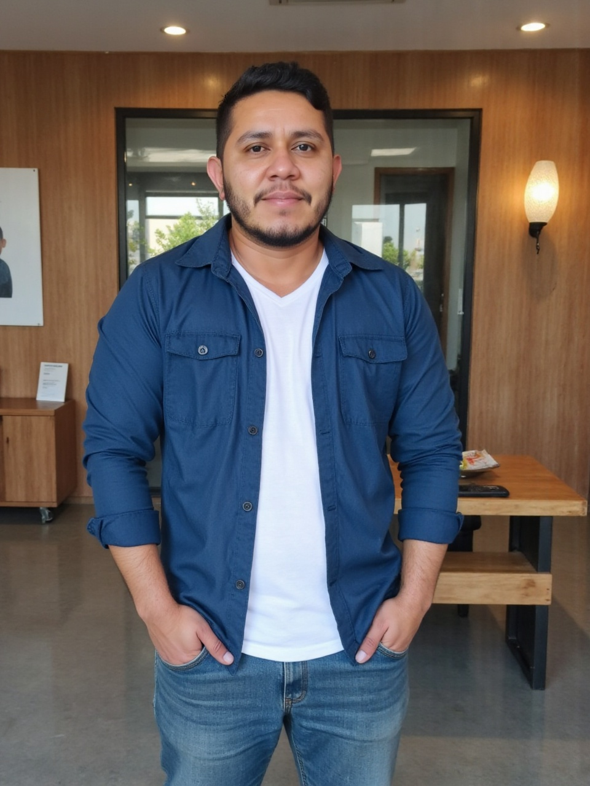

Visão assistencial
Compreensão prática de rotinas, fluxos, riscos e necessidades dos profissionais e usuários.
A trajetória na enfermagem e na segurança do paciente orienta uma arquitetura mais consciente, funcional e próxima da realidade dos serviços de saúde.

Arquiteto e Urbanista
CAU A302785-6
Proprietário e responsável técnico da Vértice Arquitetura e Avaliações.
Trajetória
Técnico de enfermagem desde 2006, Mateus iniciou sua atuação no Núcleo de Segurança do Paciente em 2018 e concluiu a graduação em Arquitetura e Urbanismo em 2024. A formação reuniu experiência assistencial, resolução de problemas e desenvolvimento técnico de projetos.
Possui pós-graduação em Projetos Hospitalares e Estabelecimentos de Saúde com ênfase em BIM e formação voltada a auditorias, avaliações e perícias.
Diferenciais
Compreensão prática de rotinas, fluxos, riscos e necessidades dos profissionais e usuários.
Projetos hospitalares e estabelecimentos de saúde com ênfase em BIM.
Decisões fundamentadas, documentação clara e compromisso com o escopo profissional.